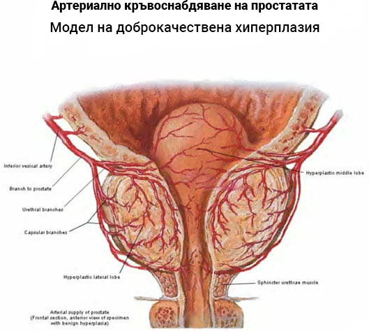

„Качеството на нашата работа се определя от хората и техния опит“, казва д-р. Елиът, който се занимава с урология повече от 20 години.
Д-р Елиът е един от малкото лекари, които не приемат погрешни изявления и остарели методи като правилни и избира да насочи всичките си ресурси към по-модерни и ефективни лечения.
Д-р Елиът е посетил над 27 здравни заведения в Съединените щати и това, което е намерил на място, според него, го е шокирало абсолютно. А именно, д-р Елиът е убеден, че лечебните заведения УМИСЛЕНО ПОТЕНЦИОННИ МАРКОВИ МЕТОДИ НА ЛЕЧЕНИЕ
ПРОСТАТИТ ПО МНОГО РАЗЛИЧНИ ПРИЧИНИ, ПОЧЕСТО ПОЧЕСТОТО ЛИПСАТА НА АДЕКВАТНИ СРЕДСТВА.
Най-изненадващият е фактът, че мъжете над 50-годишна възраст в някои% от случаите страдат от някаква форма на простатит, а липсата на средства в здравните заведения само допълнително влошава обстоятелствата на тази много тревожна статистика.
„Ако това е положението в САЩ, много се съмнявам, че е имало по-добро в Западните Балкани“, твърди Елиът.
Въпреки факта, че той има много задължения и т.н. Елиът се съгласи да отговори на въпроси в нашия кореспондент и да обясни защо настоящите методи на лечение са неприемливи за него и как да реагира правилно, когато става въпрос за простатит.
- Д-р Елиът, в една от последните си презентации посочихте, че много уролози в професията са некомпетентни и сте обявили техните методи на лечение за остарели. Как коментирате вашите изявления?
- Е, не бих го казал по този начин, това посочиха журналистите. Аз подчертах само очевидното и по този повод бих искал да отбележа, че съжалявам изключително много, ако някой се окаже обиден, но това са просто факти. Лекарите трябва да са в контакт с нови технологични открития и просто няма оправдание за остарелите методи.
Как коментирате Западните Балкани, по-точно Балгария?
Това, което успях да забележа досега въз основа на наличната литература, е, че лекарите Балгария предписват унизителен ректален масаж на простатата на мъжете, различни физиотерапевтични процедури: галванизация, електрофореза, ултразвук, магнитотерапия, както и ненужни антибиотици, които само влошават настоящото състояние на пациента .
Но най-лошото от всичко, дори при тези досадни, скъпи и опасни лечения, простатитът все още остава нелекуван и продължава да се развива. Дори ако антибиотиците имат ефект, той все още е локално, временно решение, така че не е „завинаги“, което ще доведе до същите или подобни проблеми отново след 1-2 месеца. И така, какво всъщност означава това? Простатитът се появява отново и в действителност не е отишъл никъде. В резултат на това простатитът се развива от първия етап до втория, третия, четвъртия, което оставя много рискови последици за пациента.
Много често това са различни проблеми с потентността, които водят до проблеми и на любовния план. Има болка, уринарна инконтиненция, инхибиране на плодовитостта и ИСТИНСКА ОПАСНОСТ ОТ РАКА НА ПРОСТАТАТА.
„По същество, вместо да лекуват мъж, лекарите от БиХ насочват човек към по-нататъшно изтезание, което може да доведе до летален изход“ - предупреждава д-р. Елиът
Нека си признаем, ситуацията е изключително тревожна, както в САЩ, така и в Балгария, и аз просто отказвам да мълча за това.
 Тук на снимката виждаме четирите етапа на развитие на простатит. Колкото по-голямо е
възпалението, толкова по-голяма е вероятността от рак. При липса на своевременно лечение ракът
се среща в 89% от случаите.
Тук на снимката виждаме четирите етапа на развитие на простатит. Колкото по-голямо е
възпалението, толкова по-голяма е вероятността от рак. При липса на своевременно лечение ракът
се среща в 89% от случаите.
- Според вас каква е причината номер едно опадъка на Балгарската медицината?
- С една дума, необразован, непрофесионален или „стар“ персонал, най-вече защото в държавни болници и клиники работят или пенсионирани лекари, или млади лекари без адекватен опит. Четох, че дори престижни лекари (от които са много малко) избират да фокусират всичките си знания и умения върху частни клиники, които, както се казва, „ценят“ повече техния опит. Нека бъдем реалисти, повечето пациенти не са в състояние да плащат за частно лечение и точно тогава понасят ужасни загуби.
Причинно-следствени, за тях е много по-удобно да предписват на хората ректален масаж, както и различни процедури с устройства, за да вземат колкото се може повече пари (точно както колеги от експерти, които тайно взимат двойно в частни клиники, т.нар. "двойни агенти"). Обичам да се обаждам) и това включва предписване на антибиотици, които временно помагат.
Мисля, че сега ви е много по-ясно защо всички мълчат. Всеки има семейства, деца и е логично те да се грижат за тях, но в този процес медицинската етика се губи. Някои от тях просто не се интересуват от съвременни техники и методи на лечение, а други просто предписват това, което ръководството на клиниката им казва (често под формата на поръчки) и очакват заплатата и бонуса от частните поликлиники. Пациентите, доколкото виждам, не са никъде в цялата тази история.
За съжаление медицината се превърна в бизнес в Балгария. Бил съм в много страни, но никога не съм виждал такава бъркотия, каквато е сега в Балгария... Наистина е ужасно и искрено съжалявам за хора, които са били незаконно увредени и са отказали основното си право, т.е. правото на здраве, поради такива злоупотреби.
- Можете ли да посочите поне едно текущо лечение, за което знаете, че дава резултати
- През 2003 г. датски експерти доказаха, че основната причина за простатит е влошаването на кръвния поток в тазовата област. Факт е, че в тази област има много голяма мрежа от кръвоносни съдове, които пряко участват в доставката на хранителни вещества до простатата. Поради различни негативни фактори, както и поради възрастта и некомпетентността на персонала, тези капиляри атрофират с времето.
В резултат на това простатата (която произвежда 18 жизненоважни за мъжа хормони) започва да получава недостатъчно количество хранителни вещества и кислород, което води до отлагане на секрети и примеси в тъканите, които стимулират развитието на бактерии и микроорганизми. По този начин възниква възпаление на простатата или с други думи остър простатит. В случаите без възпаление, но с натрупване на секрети, това е хроничен простатит.
Точно поради тази причина е напълно безсмислено да се действа локално и временно, т.е. да се премахват бактериите с опасни антибиотици (както прави експертизата в Балгария), а не целият проблем наведнъж чрез нормализиране на артериалния приток на кръв към простатата.
 На снимките виждаме кръвоносната система на простатата. Блокиране от цели 5% ще увеличи риска от развитие на простатит с почти 60%.Още през 2007 г. учените установяват, че меките кръвоносни съдове на таза се почистват перфектно със специална форма на витамин А, наречена алфа-хидроретинол, която в естествената си форма се намира най-вече в растителния uvi. Това вещество може да повлияе на молекулите на холестерола (основната причина за запушване на кръвоносните съдове, което по консистенция наподобява разтопено масло) и безопасно да ги унищожи отвътре, което води до пречистване на кръвоносните съдове и е най-изразено върху меките капиляри на таза.
Както диктуват практиката и официалните резултати, приемането на алфа-хидроретинол гарантира изчезването на запушванията в простатата, което в крайна сметка в дългосрочен план ефективно елиминира простатита. Какво всъщност означава това? Това означава, че внезапната болка ("пиърсинг" и т.н.), както и настоящото възпаление напълно ще изчезнат, което води до нормализиране на функцията на пикочния мехур. Казано по-неспециалистично, нормалната уринарна функция се връща, както и нормалната еректилна функция. С други думи, човек отново се превръща в мъж.
Точно това е съвременното неинвазивно лечение на простатит, което се прилага днес от развитите страни от ЕС.
- д-р Елиът, кажи ни, има ли препарати в Балгария, които съдържат алфа-хидроретинол? Какво бихте могли да посъветвате мъжете в Балгария?
- Може да звучи невероятно, но да, има такава подготовка.
Препаратът се нарича и е разработен в Медицинския университет по фармация. Освен екстракт от алфа-хидроретинол, той съдържа и около 30 много полезни органични съставки в внимателно дозирани количества. Най-просто казано, е като витаминна бомба за простатата. Няма да изброявам всички съставки, но определено ще посоча някои от най-важните:
- Екстракт от фадогия. Той увеличава производството на тестостерон 3-4 пъти, което пряко влияе върху потентността на мъжа.
- Ружът нормализира отделянето на урина и бързо спира възпалението на простатата.
- Витамин Е Подобрява качеството на сперматозоидите и подобрява ерекцията.
- Перуанският мак Повишава имунитета на простатата и предотвратява връщането на патогенната микрофлора.
- Полски частици Позволява отстраняване на инфекциозни, възпалителни и туморни процеси, както и злокачествени промени в простатата.
- И така, възможно ли е да закупите този препарат в БиХ? Продава ли се в аптеките?
- Доколкото знам, препаратът все още не се предлага в аптеките, но точно в това е проблемът. Явно е невъзможно да се изкорени корумпираната бюрокрация в Балгария. Доколкото знам, производителят се опита да достигне до аптеките в Балгария, но въпреки усилията, разпределението в аптеките не беше одобрено. За да се влошат нещата, не е приложена основателна причина за отказ.
Но има и добри новини. Официалният уебсайт на препаратите има възможност за поръчка онлайн, така че не виждам причина препаратът да не може да бъде поръчан онлайн, особено за мъже, които отчаяно се нуждаят от подобно нещо.
Когато вече сте попитали, трябва да отбележа, че в сътрудничество с доставчика съм подготвил специална ОТСТЪПКА ОТ 50%, за да повиша осведомеността за съвременното лечение на простатит и тяхната ефективност.
За тези, които решат да опитат, искам да отбележа, че те плащат само половината от цената на продукта, а другата половина ги плащам, така че ако продуктът не отговаря на очакванията, помислете, че съм на загуба колкото Вие. Имам също толкова вяра в това изключително ефективно, неинвазивно органично лечение. Единствената цел на тази програма е да помогне на болни хора, а доставката се извършва в цяла Балгария.
Вижте какво е необходимо, за да получите подготовката:
- Необходимо е да оставите заявка.
- След това ще бъдете извикани от мениджъра, за да потвърдите поръчката. Трябва да му кажете адреса за доставка.
- В рамките на 3-4 дни, необходими за доставка, куриерът доставя пратката ви.
Сега на уебсайта се провежда проучване сред мъже, които са получили с моята отстъпка и вече са преминали през целия цикъл. Целта на проучването е да посочи доколко тази подготовка помага. В момента над 2000 мъже взеха участие в проучването. Ето резултатите:
- • Пълно изчезване на болка в слабините и при уриниране - 99% от анкетираните.
- • Нормализиране на уринирането - 99% от анкетираните.
- • Пълно изчезване на простатит - 96% от анкетираните.
- • Официално подобряване на здравето на простатата - 93% от анкетираните.
- • Подобряване на общото състояние на простатата - 98% от анкетираните.
Както можете да видите, помага на повечето мъже, с помощта на които, както се вижда от приложеното, пациентите могат да бъдат лекувани вкъщи.
- Д-р Елиът, планирате ли да поддържате сътрудничество с доставчика и колко дълго ще има отстъпка?
- Тъй като напоследък се купува все повече и повече, голям брой акции вече са разпродадени, така че не съм сигурен колко дълго ще има отстъпката.
Ето защо бих препоръчал на всички мъже да си поръчат възможно най-скоро, ако искат да спестят и да реагират навреме.
Благодаря. Аз също го поръчах. Виждам много положителни коментари, така че нека видим за какво става въпрос. Опит?
VМного интересна статия. Лекувам простатата си от 3 години без никакъв напредък, честно казано, малко по-дразня се от това дърпане с лекари, но това казва, че гарантира и плаща половината от цената, така че ще поръчам за да видя какво е, не ми струва нищо.
Поръчах обаче преди отстъпката, но вече не съжалявах, съжалявах, че се лутах из чакалните и болниците.
Класическа измама
ahhahahahaha слушайте този сертифициран професионалист
Точният мъж 1/1, пих десет дни без никаква връзка дори на картата
Слушахте ли консултантите или седнахте на ушите си? Хората ви казват добре, че терапията продължава поне 2 месеца, пили сте 10 дни и сте дошли да играете експерта. Проучете малко, погледнете опита на хората в интернет след цялото лечение и след това преценете;).
Другарю, нашата диаспора и германците поръчват редовно продукт, наличен в Европа, за какво говориш?
Фадиле ште те погребат
Sahraniše te Fadile
@ gooUser159321321 100% Следя няколко fb страници, които постоянно публикуват този , хора в сок, сякаш четох, че той също е спасил няколко брака и изобщо не го броим това животно.
На 63 години съм и имам аденом на простатата. Може ли да има нещо?
опитайте, взех го от дядо ми и той имаше аденом. Лекува се 3 месеца и след това отиде на ехограф, всичко беше наред.
Подготовката е топ. Продължавам лечението и благодарение на Dokica за отстъпката имахме нужда от това.
Простатитът в никакъв случай не трябва да се пренебрегва. Имам много приятели, които сега нон-стоп са в болници заради това, а някои болници дори не чакаха ... не е за забавление, но няма начин ..
Благодаря ти! Поръчах. Казаха, че отнема 2 дни, така че ще видим.